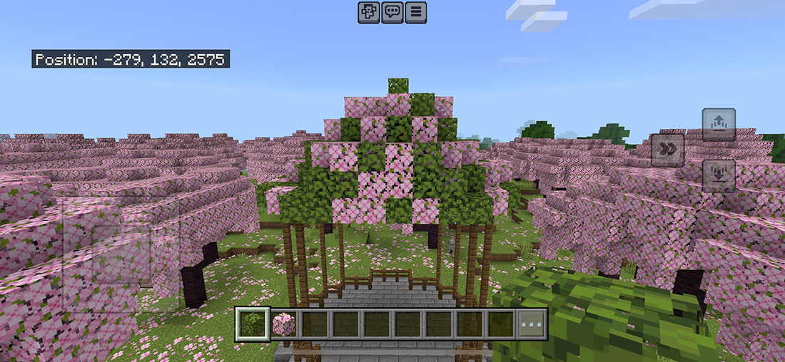
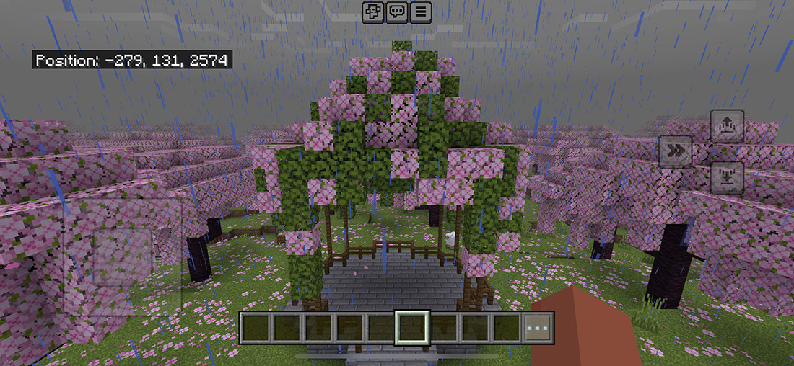

Step 4: Foliage Rooftop

Randomly place leaves on top of the fence posts creating a triangle shape.

Continue by bringing the leaves down all sides of the gazebo.
Randomly place leaves on top of the fence posts creating a triangle shape.
Continue by bringing the leaves down all sides of the gazebo.